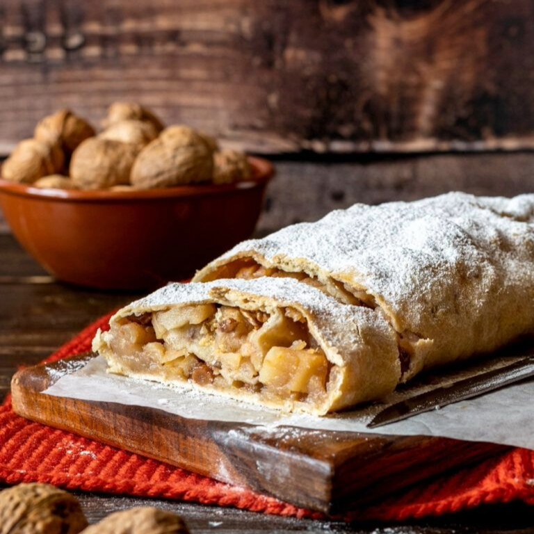
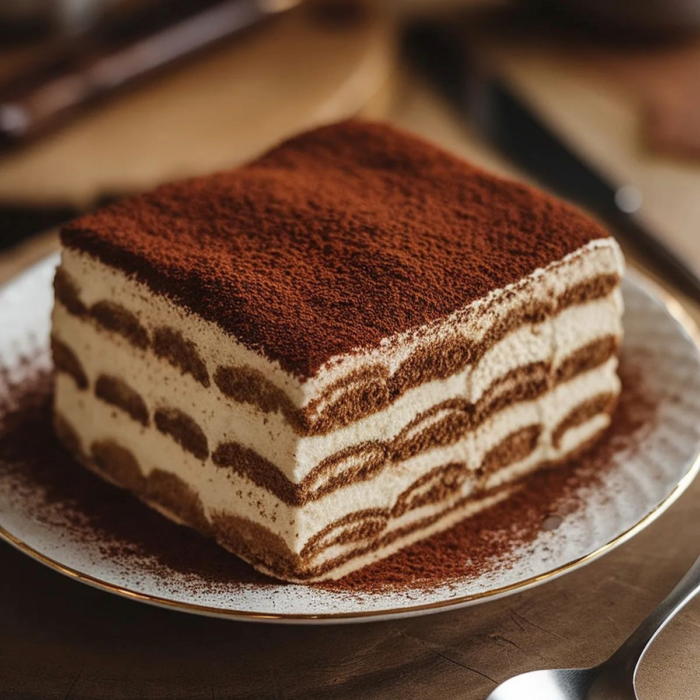

Ricette Dolci
In questa sezione troverai tutte le ricette dolci tipiche delle regioni italiane, adatte ad ogni occasione.

Trentino Alto Adige -Lo Strudel di mele-
Ingredienti:
-Farina 00 130 g
-Uova (circa 1 medio) 54 g
-Acqua 30 g
-Olio di semi (1 cucchiaio) 9 g
-Sale 1 pizzico
Per il ripieno:
-Mele Golden (da pulire) 750 g
-Zucchero 60 g
-Pangrattato 60 g
-Burro 30 g
-Uvetta 50 g
-Pinoli tostati 25 g
-Cannella in polvere 1 cucchiaino
-Rum 2 cucchiai
-Scorza di limone 1
Per spennellare:
-Burro q.b.
Per spolverizzare:
-Zucchero a velo q.b.
Preparazione:
Per preparare lo strudel di mele, iniziate dall’impasto: in una ciotola versate la farina, il sale e l’acqua. Unite anche l’olio di semi. Sbattete l’uovo a parte aggiungetelo al composto.
Amalgamate gli ingredienti con una forchetta, poi trasferite il composto sul piano di lavoro e lavorate con le mani fino ad ottenere un impasto liscio e omogeneo. Avvolgetelo nella pellicola e lasciatelo riposare in frigorifero per un’ora.
Nel frattempo mettete l’uvetta in ammollo nel rum. Fate sciogliere il burro in una padella, poi aggiungete il pangrattato e lasciatelo dorare a fuoco medio-basso, mescolando spesso.
Tenete da parte il pangrattato e dedicatevi alle mele: sbucciatele e dividetele a spicchi, poi rimuovete il torsolo e tagliatele a fettine sottili. Raccogliete le mele in una ciotola, poi unite lo zucchero, i pinoli tostati e la cannella.
Aggiungete anche l’uvetta, ben scolata e strizzata e la scorza di limone. Mescolate delicatamente il tutto; è importante non anticipare troppo questa preparazione per evitare che la frutta rilasci acqua durante la macerazione.
Trascorso il tempo di riposo dell’impasto, infarinatelo leggermente e stendetelo con il mattarello fino a formare un rettangolo di 35x45 cm. Trasferite la sfoglia su un foglio di carta forno.
Fate sciogliere il burro rimanente e spennellate la superficie della sfoglia, poi distribuite sopra il pangrattato tostato, avendo cura di lasciare liberi i bordi. Aggiungete le mele e livellatele per creare uno strato uniforme. Arrotolate il rettangolo dal lato più lungo aiutandovi con la carta forno, inserendo a metà le estremità all’interno per sigillarle bene.
Spostate il rotolo ottenuto in diagonale e trasferitelo su una leccarda insieme alla carta forno, tenendo sempre la chiusura verso il basso. Spennellate la superficie con il burro fuso rimasto e cuocete in forno statico preriscaldato a 200° per circa 40 minuti.
Quando sarà bello dorato, sfornate e lasciate intiepidire prima di spolverizzare lo strudel con lo zucchero a velo e tagliarlo a fette. Il vostro strudel di mele è pronto per essere gustato!

Venento -Il Tiramisù-
Ingredienti:
-Mascarpone 1 kg
-Uova 8
-Savoiardi (circa 42 pezzi) 350 g
-Zucchero 200 g
-Caffè 200 g
Per decorare:
-Cacao amaro in polvere q.b.
Preparazione:
Per preparare il tiramisù come prima cosa preparate il caffè con la moka e lasciatelo raffreddare in una ciotolina bassa e ampia. Separate le uova dividendo gli albumi dai tuorli, ricordate che per montare bene gli albumi non dovranno presentare alcuna traccia di tuorlo. Versate i tuorli in una ciotola (dovranno pesare circa 120 g), aggiungete metà dose di zucchero (100 g) e lavorate con le fruste elettriche sino a che il composto sarà diventato chiaro e spumoso.
Con le fruste ancora in funzione, potrete aggiungere il mascarpone, poco alla volta, sino ad ottenere una crema densa e compatta; tenetela da parte. Pulite molto bene le fruste e passate a montare gli albumi (ne serviranno circa 360 g). Versateli in una ciotola e aggiungete lo zucchero rimasto.
Dovrete montarli a neve ben ferma. Prendete una cucchiaiata di albumi e versatela nella ciotola con la crema di mascarpone e mescolate con una spatola, così stempererete il composto.
Dopodiché procedete ad aggiungere i restanti albumi in una volta sola mescolando molto delicatamente dal basso verso l'alto. La crema al mascarpone è ora pronta. Distribuitene una generosa cucchiaiata sul fondo di una pirofila di vetro, grande 35x25 cm e distribuite per bene su tutta la base.
Inzuppate per pochi istanti i savoiardi nel caffè freddo prima da un lato e poi dall’altro. Man mano distribuite i savoiardi imbevuti nella pirofila, cercando di sistemarli tutti in un verso, così da ottenere un primo strato di biscotti. Aggiungete circa metà della crema al mascarpone e spargetela bene in modo da coprirli completamente.
Distribuite sopra i savoiardi imbevuti nel caffè in maniera ordinata, poi realizzate un altro strato con la crema rimasta e livellate bene la superficie.
Spolverizzatela con del cacao amaro in polvere e lasciate rassodare in frigorifero per un paio d’ore. Il vostro tiramisù è pronto per essere gustato!